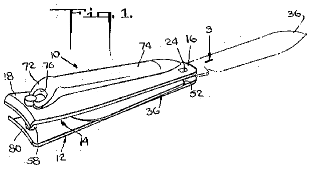
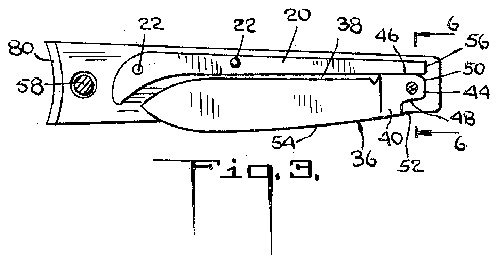
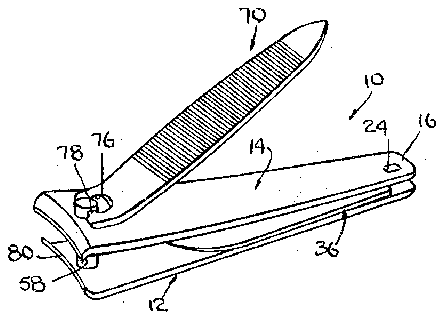
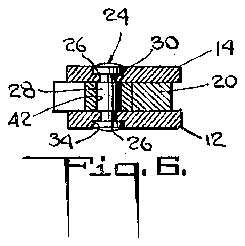
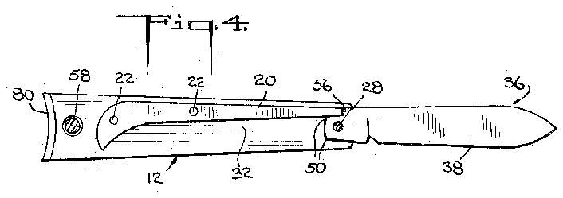
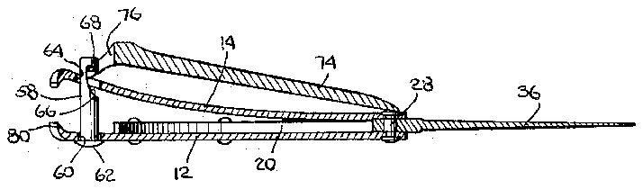
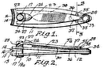
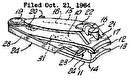

<!doctype html>

<html>

    <head>
        <meta charset="UTF-8">
        <link rel="stylesheet" type="text/css" href="../static/style.css">

        <title>US2724179</title>
    </head>

    <body>

        <p class='scrolllinks top'>
            <a href='#end'>🡇</a>
        </p>

       
       <div class='boite_info'>
           
            <span class='patentnumber'>US2724179</span>

            <span>
                
                    <span class='code_cpc'>
                        A45D29/02
                    </span>
                
                    <span class='code_cpc'>
                        B26B11/00
                    </span>
                
                    <span class='code_cpc'>
                        B25F1/04
                    </span>
                
            </span>

            
            <h1> Combined nail nippers and clasp knife </h1>
            <div class="date_line">
                <span class='date' title="November 22, 1955">1955</span>
                
                    <span class='inventor'>
                        Baer Albert M.
                        
                    </span>
                
                <span class='assignee-list'>
                    
                        <span class='assignee'>
                            Imp Knife Company Inc
                            
                        </span>
                    
                <span>
            </div>


       </div>

       
        <div class='boite_view'>

            <div class='figures'>
                
                
                    
                
                    
                
                    
                
                    
                
                    
                
                    
                
                
            </div>
            <div class='legende'>

                
                <ul>
                    
                        <li  class="non-consecutive"  >
                            <span class='legend_number'> 5</span>m
                        </li>
                    
                        <li  class="non-consecutive"  >
                            <span class='legend_number'> 12</span>leaf
                        </li>
                    
                        <li  class="non-consecutive"  >
                            <span class='legend_number'> 14</span>leaf
                        </li>
                    
                        <li  class="non-consecutive"  >
                            <span class='legend_number'> 16</span>rear
                        </li>
                    
                        <li  class="non-consecutive"  >
                            <span class='legend_number'> 18</span>front
                        </li>
                    
                        <li  class="non-consecutive"  >
                            <span class='legend_number'> 20</span>back spacer
                        </li>
                    
                        <li  class="non-consecutive"  >
                            <span class='legend_number'> 22</span>i provide two rivets
                        </li>
                    
                        <li  class="non-consecutive"  >
                            <span class='legend_number'> 24</span>pin
                        </li>
                    
                        <li  class="non-consecutive"  >
                            <span class='legend_number'> 26</span>openings
                        </li>
                    
                        <li  class="non-consecutive"  >
                            <span class='legend_number'> 28</span>central portion
                        </li>
                    
                        <li  class="non-consecutive"  >
                            <span class='legend_number'> 30</span>form shoulders
                        </li>
                    
                        <li  class="non-consecutive"  >
                            <span class='legend_number'> 34</span>counter-sunk indentations
                        </li>
                    
                        <li  class="non-consecutive"  >
                            <span class='legend_number'> 36</span>conventional knife blade
                        </li>
                    
                        <li  class="non-consecutive"  >
                            <span class='legend_number'> 38</span>cutting edge
                        </li>
                    
                        <li  class="non-consecutive"  >
                            <span class='legend_number'> 40</span>conventional tang
                        </li>
                    
                        <li  class="non-consecutive"  >
                            <span class='legend_number'> 42</span>aperture
                        </li>
                    
                        <li  class="non-consecutive"  >
                            <span class='legend_number'> 44</span>rear edge
                        </li>
                    
                        <li  class="non-consecutive"  >
                            <span class='legend_number'> 46</span>edges
                        </li>
                    
                        <li  class="non-consecutive"  >
                            <span class='legend_number'> 50</span>corners
                        </li>
                    
                        <li  class="non-consecutive"  >
                            <span class='legend_number'> 52</span>shoulder
                        </li>
                    
                        <li  class="non-consecutive"  >
                            <span class='legend_number'> 54</span>blunt back edge
                        </li>
                    
                        <li  class="non-consecutive"  >
                            <span class='legend_number'> 56</span>rear edge
                        </li>
                    
                        <li  class="non-consecutive"  >
                            <span class='legend_number'> 60</span>opening
                        </li>
                    
                        <li  class="non-consecutive"  >
                            <span class='legend_number'> 64</span>post also extends througha&#39;n opening
                        </li>
                    
                        <li  class="non-consecutive"  >
                            <span class='legend_number'> 70</span>eld&#39;by aconventional actuating lever
                        </li>
                    
                        <li  class="non-consecutive"  >
                            <span class='legend_number'> 72</span>head
                        </li>
                    
                        <li  class="non-consecutive"  >
                            <span class='legend_number'> 74</span>ahandle
                        </li>
                    
                        <li  class="non-consecutive"  >
                            <span class='legend_number'> 76</span>opening
                        </li>
                    
                        <li  class="non-consecutive"  >
                            <span class='legend_number'> 78</span>bar
                        </li>
                    
                        <li  class="non-consecutive"  >
                            <span class='legend_number'> 80</span>ardp&#39;ortions 18ofthe leaveshave tips
                        </li>
                    
                        <li  class="non-consecutive"  >
                            <span class='legend_number'> 179</span>baer
                        </li>
                    
                        <li  class="non-consecutive"  >
                            <span class='legend_number'> 624</span>is patent &#34;united stat&#39;es patent
                        </li>
                    
                        <li  class="non-consecutive"  >
                            <span class='legend_number'> 664</span>is patent &#34;united stat&#39;es patent
                        </li>
                    
                        <li    >
                            <span class='legend_number'> 724</span>baer
                        </li>
                    
                </ul>
                
            </div>
            <div class='description'>
                <!-- <h4> Description </h4> -->
                <div class='description-text'>
                    

                    <h4> Description </h4>
                    
                    
                        <p> Nov. 22, 1955 M,<span class="highlightfromlegend legenditem2"> BAER 2<span class="highlightfromlegend legenditem724">,724,17<span class="highlightfromlegend legenditem179">9</span></span></span>   </p>
                    
                        <p>  COMBINED NAIL NIPPERS AND CLASP KNIFE Filed Oct. 1, 1954 sill  IN V EN TOR. A; 5527&#39;<span class="highlightfromlegend legenditem5"> M 5</span> 450 Knife Company, Inc., Providence, R. 1., a corporation ofRhode Island Application October 1, 1954, Serial No.<span class="highlightfromlegend legenditem2"> 459,672   </p>
                    
                        <p>  r 2</span> Claims. (Cl. 30-123) This invention relates to a combined nail nippers and clasp knife.   </p>
                    
                        <p>   It is an object of the invention to provide a combination tool of the character described having a knife blade handily, compactly and foldably mounted in the handle of a nail. nippers without noticeablyincreasing the size of the nippers so that a clasp blade is conveniently carried in this ubiquitous manicuring implement.   </p>
                    
                        <p>  , It is another object of the invention to provide a combination tool of the character described in which the blade is so mounted in the nippers that it will not interfere with the nail trimmingoperation.   </p>
                    
                        <p>   It is a further object of the invention to provide a combination tool of the character described in which the blade is protected and itscutting edge, concealed when closed.   </p>
                    
                        <p>   Other objects of the invention in part will be obvious and in part will be pointed out hereinafter.   </p>
                    
                        <p>  My invention accordingly consists in the features of United States Patent construction, combinations of elements and arrangements of parts which will be exemplified in the device hereinafter described and of which thescope of application will be indicated in the appended claims.   </p>
                    
                        <p>   In the accompanying drawings in which is shown one of the various possible embodiments of my invention,   </p>
                    
                        <p>  . Fig. 1 is a perspective view of the combination tool with the nippers and knife blade idle, the knife blade being shown extended in dot-and-dash lines;   </p>
                    
                        <p>   Fig. 2 is a view similar to Fig. 1, but illustratingthe nipper actuating lever in operative position;   </p>
                    
                        <p>   Fig. 3 is a sectional view taken substantially along the line 3-3 of Fig. 1;   </p>
                    
                        <p>   Fig. 4 is a view similar to Fig. 3, but illustrating the knife blade in extended position;   </p>
                    
                        <p>   Fig. 5 is a sectional view taken substantially along the line 5-5 of Fig. 4; and   </p>
                    
                        <p>   Fig. 6 is an enlarged sectional view taken substantially along the line 6-6 of Fig. 3.   </p>
                    
                        <p>   Referring now in detail to the drawings, the reference numeral 10 denotes a tool constituting a combined nail nippers and clasp knife. Said tool includes<span class="highlightfromlegend legenditem12"> two el<span class="highlightfromlegend legenditem14">ongated leaves 12, 14</span></span> of metallic spring stock, e. g. steel, which run from the<span class="highlightfromlegend legenditem16"> rear 16</span> to the<span class="highlightfromlegend legenditem18"> front 18</span> of the tool. Conveniently, the leaves have substantially identical configurations and their edges are in registration.   </p>
                    
                        <p>   Intermediate the two leaves there is disposed an<span class="highlightfromlegend legenditem20"> elongated strip 20</span> of resilient metal stock hereinafter referred to as the back spacer.&#34; The back spacer extends longitudinally from adjacent the rear of the tool to near the front thereof. Means is provided suitable to secure the back spacer to one or the other of the leaves, e. g. the<span class="highlightfromlegend legenditem12"> leaf 12</span>, along the forward half only of the spacer. For this purpose,<span class="highlightfromlegend legenditem22"> I provide two rivets 22</span> which extend through pairs of registered openings in the back spacer and<span class="highlightfromlegend legenditem12"> leaf 12</span>. One of these rivets is located near the front end of the back spacer and the other near the center. Thus, the   </p>
                    
                        <p>  rear half of the back spacer is left free and can be flexed relative to the front half.   </p>
                    
                        <p>   For the sake of appearance, one longitudinal edge of the back spacer runs parallel to one set of registered longitudinal. edges of the leaves, this edge of the spacer either being in registry with said, set of edges of the leaves or inset slightly therefrom as shown .in Figs. 3, 4, and 6.   </p>
                    
                        <p>   A pivot such as a<span class="highlightfromlegend legenditem24"> pin 24</span> extends through<span class="highlightfromlegend legenditem26"> registered openings 26</span> in the leaves adjacent the rear ends thereof. The<span class="highlightfromlegend legenditem28"> central portion 28</span> of the pin is of cylindrical transverse cross-section and has a diameter in excess of a transverse dimension of the portions of the pins passing through the<span class="highlightfromlegend legenditem26"> openings 26</span> whereby to<span class="highlightfromlegend legenditem30"> form shoulders 30</span> at opposite ends of said central portion against which the leaves bear. i   </p>
                    
                        <p>   The lengthv of the central portion from shoulder to shoulder is equal to the thickness of the<span class="highlightfromlegend legenditem20"> back spacer 20</span> so that when the ends of the pin engage the leaves, a<span class="highlightfromlegend legenditem32"> compartment 32</span> is provided between the leaves alongside the back spacer. The compartment opens at the side of the nippers remote from the back spacer.   </p>
                    
                        <p>   The ends of the pin are suitably secured to the leaves in such fashion that the leaves cannot experience angular movement with respect to one another about the pin and cannot move relative to the pin adjacent their rear ends. For this purpose, I include<span class="highlightfromlegend legenditem34"> counter-sunk indentations 34</span> in the exposed surfaces of the leaves around the<span class="highlightfromlegend legenditem26"> openings 26</span>. The pin is headed at both ends for reception in said counter-sunk indentations. The indentations are of noncircular outline and the headed portions of the pin snugly fit in the indentations whereby the leaves are unable to rotate with respect to the pin.   </p>
                    
                        <p>   A<span class="highlightfromlegend legenditem36"> conventional knife blade 36</span> is disposed in the<span class="highlightfromlegend legenditem32"> com partment 32</span>. Said blade runs longitudinally of the compartment with its<span class="highlightfromlegend legenditem38"> cutting edge 38</span> alongside the back spacer and slightly spaced therefrom when the blade is in closed position. The blade also includes a<span class="highlightfromlegend legenditem40"> conventional tang 40</span> having flat parallel broad surfaces and a through<span class="highlightfromlegend legenditem42"> aperture 42</span>. The central portion of the<span class="highlightfromlegend legenditem24"> pin 24</span> extends through the<span class="highlightfromlegend legenditem42"> aperture 42</span> which thereby acts as a pivot for the knife blade. The blade thickness is almost equal to the length of the central portion of the pin so that the blade is free to rotate about the pin.   </p>
                    
                        <p>   The<span class="highlightfromlegend legenditem44"> rear end 44</span> of the tang is straight. The upper an<span class="highlightfromlegend legenditem46"> lower <span class="highlightfromlegend legenditem48">edges 46, 48</span></span> of the tang likewise are straight, and are approximately perpendicular to the<span class="highlightfromlegend legenditem44"> rear edge 44</span>. The distance from the pin to each of said<span class="highlightfromlegend legenditem44"> edges <span class="highlightfromlegend legenditem46">44, 46,<span class="highlightfromlegend legenditem48"> 48</span></span></span> is substantially the same and is somewhat greater than the distance from said pin to the nearest portion of the<span class="highlightfromlegend legenditem20"> back spacer 20</span> when the spacer is relaxed.   </p>
                    
                        <p>   When the knife is in closed position as shown in Fig. 3, it will be held there by pressure of the back spacer against the<span class="highlightfromlegend legenditem46"> flat edge 46</span>. Similar pressure against the<span class="highlightfromlegend legenditem44"> edge 44</span> will maintain the knife in half-open position against accidental displacement; and the same action against the<span class="highlightfromlegend legenditem48"> edge 48</span> will maintain the blade in the fully open position shown in dot-and-dash line in Fig. 1 against the accidental closing movement. The pressure described also will tend to bias the knife blade into any one of the mentioned position as that position is approached.   </p>
                    
                        <p>   The<span class="highlightfromlegend legenditem50"> corners 50</span> at the ends of the<span class="highlightfromlegend legenditem44"> rear edge 44</span> are rounded to facilitate opening and closing movement of the blade.   </p>
                    
                        <p>   A<span class="highlightfromlegend legenditem52"> shoulder 52</span> between the<span class="highlightfromlegend legenditem48"> edge 48</span> and the<span class="highlightfromlegend legenditem54"> blunt back edge 54</span> of the blade is adapted to abut against the<span class="highlightfromlegend legenditem56"> rear edge 56</span> of the back spacer when the blade is in fully open position (see Fig. 4).   </p>
                    
                        <p>   By virtue of the foregoing arrangement. the blade, when in folded, i. e. closed, position, lies substantially flat against the<span class="highlightfromlegend legenditem12"> leaf 12</span> to which the back spacer is permanently secured. As is best seen in Fig. 5, the<span class="highlightfromlegend legenditem12"> leaf 12</span> is 0 substantially straight and is so maintained by the back tion of...the....leaf .12 although, their rear ends, are held against the blade by the<span class="highlightfromlegend legenditem24"> pin 24</span>.   </p>
                    
                        <p>   A<span class="highlightfromlegend legenditem58"> post 58</span> extends through an<span class="highlightfromlegend legenditem60"> opening 60</span> in the forampbawnasef &#39;the&#39;leaf12. Said post has anenlar&#39;ged liead &#39;62 whichis adapted to engagethe outer surfaces the 1&#39;eaf12. &#34;Th<span class="highlightfromlegend legenditem64">epost also extends througha&#39;n opening 64</span> &#39;i&#39;n&#39;<span class="highlightfromlegend legenditem14"> thelaf 14</span>, said opening being somewhat larger than the diameter of&#39;t he postwhereby to permit flexing fr&#39;iovme&#39;nt of&#39;the&#39;l&#39;eaf&#39;14 about its anchor point on the pin i4. &#34;The&#39;po&#39;stin&#39;cludes a side opening notch &#39;66 having an<span class="highlightfromlegend legenditem68"> upwardl-yextehding undercut 68</span> located below the upper T651514 &#34;when said lBElflS relaxed.   </p>
                    
                        <p>   TTheIInippersi&#39;s manip&#39;ula<span class="highlightfromlegend legenditem70">teld&#39;by aconventional actuating lever 70</span> &#34;including a<span class="highlightfromlegend legenditem72"> head 72</span> and<span class="highlightfromlegend legenditem74"> ahandle 74</span>&#39; that are atan obtusefa&#39;n&#39;g&#39;le with respect to&#39;oneanother. lac/head is perforated to form an<span class="highlightfromlegend legenditem76"> opening 76</span> defining a<span class="highlightfromlegend legenditem78"> bar 78</span> across one edge &#34;of the head. The opening passes a portionofthe&#39;tip of t&#39;he&#39;p&#39;ost&#39;. &#34;The bar is caught in the<span class="highlightfromlegend legenditem68"> ufldercut 68</span>&#34;a&#39;nd thereby maintains the<span class="highlightfromlegend legenditem14"> leaf 14</span> in depfessedcondition.   </p>
                    
                        <p>  When&#39;t hele&#39;ver is idle as shown&#39;in Fig. 1, the undersurface of the head faces&#39;the leaf14. To render the lever operableit is&#39;<span class="highlightfromlegend legenditem180"> turned 180</span> about the<span class="highlightfromlegend legenditem78"> bar 78<span class="highlightfromlegend legenditem180"> and 180</span></s<span class="highlightfromlegend legenditem58">pan> atioutthe o&#39;st 58</span> to place it in the actuating&#39;position &#34;shown inFig.&#34;2. In such position the previously outer surface &#34;of&#34;the head rests against the<span class="highlightfromlegend legenditem14"> leaf 14</span> and the hahdl&#39;ean&#39;gl&#39;es outwardly away from said leaf so that when&#34;depressed it will&#39;fiex the upper leaf toward the lower Tear.   </p>
                    
                        <p>   Thefor<span class="highlightfromlegend legenditem80">wardp&#39;ortions 18ofthe leaveshave tips 80</span> which areshaped&#39;toform nipping jaws of a well&#39;known type.   </p>
                    
                        <p>   Itiwill be&#39;observed that&#39;the blade is conveniently concealed between the two leaves when in cl&#39;osed&#39;position and thus does not interfere with &#39;the&#39;flexibility ofthe leaf that isiope&#39;rate&#39;d bythe actuating lever. However, when the lack is&#39;opened, the twole aves form astur dyhandle for mariipulation&#39;of the blade.   </p>
                    
                        <p>  &#39; Itthus &#39;willbe seen that there is provided a device which achieves all the objects of my invention and is well adapted to meet the conditions of practical use.   </p>
                    
                        <p>   As various possible embodiments might be made of &#39;thea&#39;bove invention, and as various changes might be made in&#34; the embodiment above set forth, it&#39;is&#39;to&#39;be understood that all mattcr&#39;herein described, or &#39;shown&#39;in the accompanying drawings, &#39;is&#39;to be interpreted as illustrative and&#39;not in a&#39; limiting sense.   </p>
                    
                        <p>   Having thus described the invention; there is claimed as new and is .desiredto be secured byLettersPatent:   </p>
                    
                        <p>   1. A combined nail nipper and clasp knife tool comprising a first elongated nipper leaf, a second elongated nipper leaf, said nipper leaves having nipper tips at their forward ends, an elongated resilient back spacer between said leaves and running&#39;parallel thereto and with said leaves defining a narrow c&#39;om pa rtment, means securing the frdiit ii&#39;bitioh any of *tiie lia ck space&#39;r io the ea leaf. and leaving the rear end portion of the back spacer free toifiex, a pin&#39;ex tendi&#39;ng throughsaid leaves ad aem the rear ends thereof and sec ur&#39;ing said &#39;leaves-toqo&#39;ne another, means to restrain the leaves against rotation relative to the &#39;axis &#34;ofthe pin,- said&#34;lastnamed ifieafis constituting openings in, the leaves receiving the ends of the pin, said openings and ends of the pin being of matching noncircularcross section, at least said second leaf being resilient, manually manipulatable means to flex the second leaf toward the first leaflahda clasp blade-having an apertured tang rotatable on said pin and bearing-against said back jspac&#39;er. I  <span class="highlightfromlegend legenditem2"> </p>
                    
                        <p>   2</span>. A&#34; combined nail&#34;nipper and cla&#39;sp knife tool&#39;co&#39;tnprising 1a first elongated nipp&#39;erleaffa&#39; second elongated nipper leaf, said nip&#39;per le&#39;ave&#39;s having nipper tips at their forward ends, anelong&#39;ated resilient back-spacer between said leaves &#39;an&#39;dr&#39;imnin&#39;g paraIleI thereto and with said leaves defining a&#39;narrow compartment, meansse&#39;curing the front portionbnly ofthe back spacer to the first leafa&#39;iid leaving the &#34;r&#39;earend &#39;p&#39;brtio&#39;n&#39;bfthe back spacer tree; &#34;to *fiex, a pin extending through said leaves adjacent the rearends thereof andsecur&#39;ing &#39;said leaves to one&#39;an&#39;o&#39;tl&#39;ier, said&#39;pin including manna liold&#39;the leaves apart a distance&#39;sub- &#39;sta ntiallyqua&#39;l to the thickness of the back-spa cer/at least said second leaf being resilient, manually manipulatable&#39;m&#39;eans to flex the second leaf toward the first leaffand a clasp blade having an apertur&#39;ed-tang&#39; rotatable on said pinand&#39;bear&#39;ing against said back spacer.   </p>
                    
                        <p>  &#39; R&#39;ferencesCite&#39;d&#39;in the file of t<span class="highlightfromlegend legenditem2">his pat<span class="highlightfromlegend legenditem664">ent &#3<span class="highlightfromlegend legenditem624">4;UNITED sTAT&#39;Es PATENT 2,664,624</span></span></span> Bassett ianfs, i954 FOREIGN PATENTS -i9&#39;1gs&#39;63 Great Britain Jan/25,1923 </p>
                    
                </div>
            </div>
        </div>


        <div class='citations'>
            <h4>Brevets cités</h4>
            <div class='listcited'>
                
                
                    <a href="US2664624.html" class='citedlinkbox'>
                        <div class='citedimgwrapper'>
                            
                            
                            
                        </div>
                        <div class='citedinfowrapper'>
                            <h5>Nail clipper</h5>
                            <div><span class='date'>1954</span>
                            <span class='inventor'>Bassett William E.</span></div>
                        </div>
                    </a>
                
            </div>

            <h4>Brevets citants</h4>
            <div class='listcitedby'>
                
                
                    <a href="US3316634.html" class='citedlinkbox'>
                        <div class='citedimgwrapper'>
                            
                            
                            
                        </div>
                        <div class='citedinfowrapper'>
                            <h5>Combination implement assembly</h5>
                            <div><span class='date'>1967</span>
                            <span class='inventor'>Bliss Harvey N.</span></div>
                        </div>
                    </a>
                
                    <a href="US3261093.html" class='citedlinkbox'>
                        <div class='citedimgwrapper'>
                            
                            
                            
                        </div>
                        <div class='citedinfowrapper'>
                            <h5>Combined nail clipper and knife</h5>
                            <div><span class='date'>1966</span>
                            <span class='inventor'>Reswick James B.</span></div>
                        </div>
                    </a>
                
            </div>
        </div>

        <p class='navlinks'>
            <a href="https://www.google.com/patents/US2724179">google patent 🔗</a>
            <a href='../list.html'>back to the list 🡄</a>
        </p>

        <p class='scrolllinks end'>
            <a name="end" href='#top'> 🡅 </a>
        </p>
    </body>

</html>